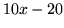
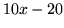

When building a speech recognition system or investigating speech recognition algorithms, performance must be monitored by testing on databases of test utterances for which reference transcriptions are available. To use HVITE for this purpose it is invoked with a command line of the form
HVite -w wdnet dict hmmlist testf1 testf2 ....
where wdnet is an SLF file containing the word level network,
dict is the pronouncing dictionary and hmmlist contains
a list of the HMMs to use. The effect of this command is that
HVITE will use HNET to compile the word level network
and then use HREC to recognise each test file. The parameter kind
of these test files must match exactly with that used to train the HMMs.
For evaluation purposes, test files are normally stored in parameterised
form but only the basic static coefficients are saved on disk. For example,
delta parameters are normally computed during loading. As explained in
Chapter 5, HTK can perform a range of parameter conversions
on loading and these are controlled by configuration variables. Thus,
when using HVITE, it is normal to include a configuration file
via the -C option in which the required target parameter kind
is specified. Section 13.6 below on processing direct
audio input explains the use of configuration files in more detail.
In the simple default form of invocation given above, HVITE would expect to find each HMM definition in a separate file in the current directory and each output transcription would be written to a separate file in the current directory. Also, of course, there will typically be a large number of test files.
In practice, it is much more convenient to store HMMs in master macro files (MMFs), store transcriptions in master label files (MLFs) and list data files in a script file. Thus, a more common form of the above invocation would be
HVite -T 1 -S test.scp -H hmmset -i results -w wdnet dict hmmlist
where the file test.scp contains the list of test file names,
hmmset is an MMF containing the HMM definitions13.1,
and results is the MLF for storing the recognition output.
As shown, it is usually a good idea to enable basic progress reporting by setting the trace option as shown. This will cause the recognised word string to be printed after processing each file. For example, in a digit recognition task the trace output might look like
File: testf1.mfc SIL ONE NINE FOUR SIL [178 frames] -96.1404 [Ac=-16931.8 LM=-181.2] (Act=75.0)where the information listed after the recognised string is the total number of frames in the utterance, the average log probability per frame, the total acoustic likelihood, the total language model likelihood and the average number of active models.
The corresponding transcription written to the output MLF form will contain an entry of the form
"testf1.rec"
0 6200000 SIL -6067.333008
6200000 9200000 ONE -3032.359131
9200000 12300000 NINE -3020.820312
12300000 17600000 FOUR -4690.033203
17600000 17800000 SIL -302.439148
.
This shows the start and end time of each word and the total log probability.
The fields output by HVITE can be controlled using
the -o. For example, the option -o ST would suppress
the scores and the times to give
"testf1.rec"
SIL
ONE
NINE
FOUR
SIL
.
In order to use HVITE effectively and efficiently, it is important to set appropriate values for its pruning thresholds and the language model scaling parameters. The main pruning beam is set by the -t option. Some experimentation will be necessary to determine appropriate levels but around 250.0 is usually a reasonable starting point. Word-end pruning (-v) and the maximum model limit (-u) can also be set if required, but these are not mandatory and their effectiveness will depend greatly on the task.
The relative levels of insertion
and deletion errors
can be controlled
by scaling the language model likelihoods using the -s option
and adding a fixed penalty using the -p option.
For example, setting -s 10.0 -p -20.0 would mean that every language
model log probability  would be converted to  before being
added to the tokens emitted from the corresponding word-end node. As
an extreme example, setting -p 100.0
caused the digit recogniser above to output
would be converted to  before being
added to the tokens emitted from the corresponding word-end node. As
an extreme example, setting -p 100.0
caused the digit recogniser above to output
SIL OH OH ONE OH OH OH NINE FOUR OH OH OH OH SILwhere adding 100 to each word-end transition has resulted in a large number of insertion errors. The word inserted is ``oh'' primarily because it is the shortest in the vocabulary. Another problem which may occur during recognition is the inability to arrive at the final node in the recognition network after processing the whole utterance. The user is made aware of the problem by the message ``No tokens survived to final node of network''. The inability to match the data against the recognition network is usually caused by poorly trained acoustic models and/or very tight pruning beam-widths. In such cases, partial recognition results can still be obtained by setting the HREC configuration variable FORCEOUT true. The results will be based on the most likely partial hypothesis found in the network.